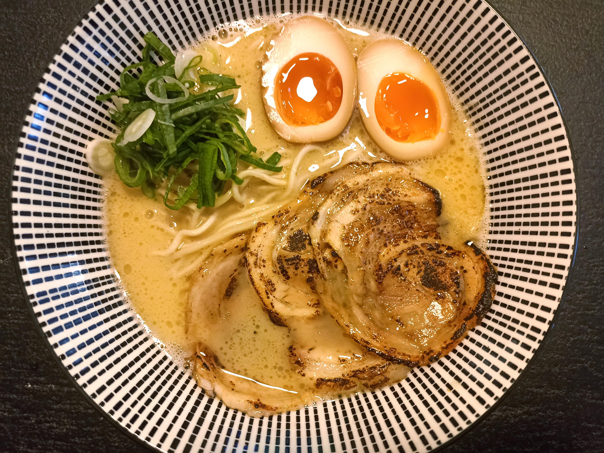

Tori Paitan

Description
Tori Paitan is a chicken-bone based broth with a light but rich taste.
Ingredients
Steps
- While cooking the noodles, add the tare, aroma oil, and soup to the serving bowl.
- Strain the noodles.
- Fold the noodles into the soup.
- Add any toppings.